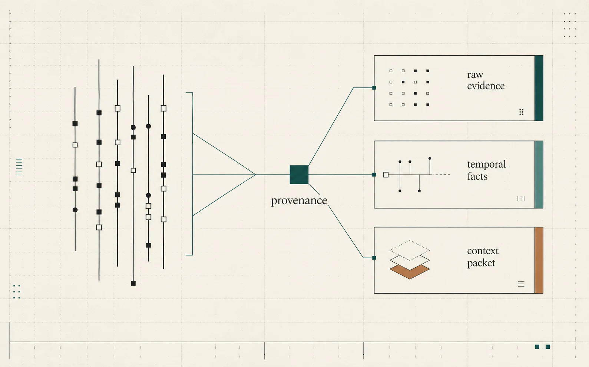
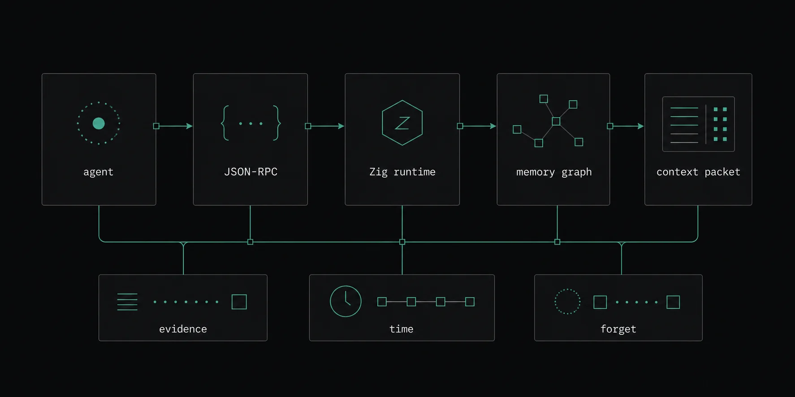

Facts go stale
An agent may learn that a project uses npm, then later learn it moved to pnpm. Quipu represents the change instead of burying both statements in search results.
Quipu, pronounced kee-poo
Quipu is a local-first memory layer for AI agents. It keeps raw evidence, turns it into temporal facts and procedures, and retrieves compact context packets with provenance.

Agents need memory that survives sessions, knows when facts changed, can cite what it came from, and can actually forget.
An agent may learn that a project uses npm, then later learn it moved to pnpm. Quipu represents the change instead of burying both statements in search results.
Derived memories link back to raw messages or events, so the agent can explain why it believes something and audits can check the source.
When evidence is removed or redacted, memories derived from it must be invalidated too. Deletion cannot stop at one row.
Store messages and events as durable evidence before any model interpretation happens.
Compile observations into preferences, project facts, goals, lessons, and test commands while preserving links to evidence.
Treat "true for this project" and "true until yesterday" as first-class memory properties.
Return a small, structured packet the agent can use at inference time instead of a loose top-k pile.
Dry-run a forget operation, tombstone or redact evidence, and invalidate derived memories that depended on it.

The public API is intentionally small. SDKs validate inputs and call the runtime; they do not reimplement extraction, retrieval, temporal logic, or forgetting.
The current core runs in Zig with an in-memory adapter by default and an optional LatticeDB-backed adapter for durable local storage.
{
"method": "memory.remember",
"params": {
"scope": { "projectId": "repo:quipu" },
"messages": [
{
"role": "user",
"content": "Run just test before committing."
}
]
}
}{
"method": "memory.retrieve",
"params": {
"query": "What should I run before committing?",
"scope": { "projectId": "repo:quipu" },
"needs": ["current_facts", "procedural"]
}
}cd core
zig build
./zig-out/bin/quipu health
printf '%s\n' '{"jsonrpc":"2.0","id":"1","method":"system.health","params":{}}' \
| ./zig-out/bin/quipu rpc-stdin